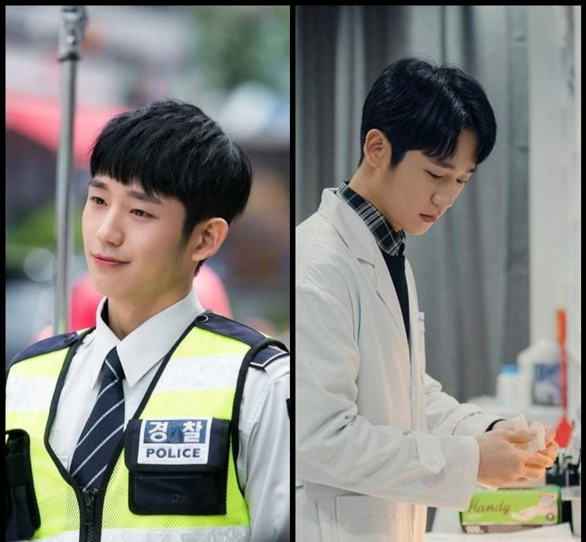

EXCLUSIVO: Novo dorama bl com Ro woon e Jung Hae é confirmado para novembro de 2026
Baek Jihoon e Hong Yongjin são dois gênios que estão no topo do conselho estudantil de sua prestigiosa academia, tornando-os a elite entre a elite. Mas é solitário no topo e cada um se apaixonou pelo outro. Há apenas um grande problema no caminho da felicidade amorosa - ambos são orgulhosos demais para serem os primeiros a confessar seus sentimentos românticos e, assim, se tornam os "perdedores" na competição do amor! E a ssim começam seus esquemas diários para forçar o outro a confessar primeiro!
Por Carla do Morro, g1
21/03/2025 02h45 Atualizado há 6 horas

Rowoon em rei de porcelana e “Extraordinary you
O ator e cantor sul-coreano Rowoon, amplamente reconhecido por suas
atuações em dramas como “Extraordinária você”, “Amanhã”, “Destinado a
Você” e “O Rei de Porcelana” Rowoon, cujo nome verdadeiro é Kim Seok-woo,
é membro do grupo de K-pop SF9 e tem conquistado uma base de fãs global
tanto na música quanto na atuação.
Rowoon iniciou sua carreira como integrante do grupo SF9, que rapidamente ganhou popularidade com suas
músicas cativantes e performances energéticas. Paralelamente à sua carreira musical, Rowoon se aventurou
na atuação, conquistando papéis em dramas que receberam aclamação crítica e popularidade entre o
público.Seus papéis em “Extraordinary You” (Extraordinário Você), “Tomorrow” (Amanhã), “Destined With
You” (Destinado a Você) e “O Rei de Porcelana” demonstraram sua versatilidade como ator, permitindo-lhe
explorar uma variedade de personagens e emoções. Essa habilidade de transitar entre a música e a atuação
consolidou sua posição como uma das estrelas em ascensão da Coreia do Sul.
Anuncio
Rowoon é um exemplo de como a dedicação e o talento podem transcender fronteiras culturais, inspirando uma nova geração de artistas a seguir seus passos. À medida que ele continua a evoluir em sua carreira, fãs ao redor do mundo aguardam ansiosamente por seus próximos projetos e realizações.
Hae em enquanto você dormia e uma noite de primavera
Quem é Jung Hae In, astro de k-dramas O ator fez sua estreia na mídia coreana em 2013, quando fez uma
participação no clipe da canção Moya, do grupo feminino de k-pop AOA Black. No ano seguinte, conseguiu
um papel coadjuvante na série A Noiva do Século, que durou apenas uma temporada.A partir daí, a carreira
de Hae In começou a crescer na Coreia do Sul, com papéis na série The Three Musketeers e no filme The
Youth. Já a fama internacional veio com a Enquanto Você Dormia, k-drama de fantasia de 2017.
No Brasil, a popularidade do astro cresceu com O Amor Mora ao Lado, que ficou por semanas entre as
séries mais assistidas da Netflix no País, mas outras produções estreladas pelo ator também fazem
sucesso por aqui, como Snowdrop, disponível no Disney+, em que ele faz par com a cantora Jisoo, do grupo
de k-pop Blackpink.
Anuncio
Outros doramas com Hae In são Uma Noite de Primavera (Netflix), D.P Dog Day (Netflix), Um Pedaço da Sua Mente (Viki) e Something in the Rain (Netflix).
ENTREVISTA
Kim Min-ji (entrevistadora): Olá, pessoal! Hoje temos dois atores incríveis que vão protagonizar o
K-Drama Love is War, previsto para novembro de 2026. Sejam bem-vindos, Jung Hae In e Rowoon!
Jung Hae In: Oi, oi! Muito feliz de estar aqui!
Rowoon: Olá, pessoal! -Rowoon sorri e acena para camera.
Kim Min-ji: Então, vamos direto ao ponto. Love is War tem uma premissa bem divertida – dois gênios
apaixonados, mas tão orgulhosos que ninguém quer confessar primeiro. Agora, sejam sinceros… se
estivessem nessa situação na vida real, quem confessaria primeiro?
Jung Hae In: Ele! Com certeza ele! Rowoon: Rindo O quê?! Por que eu?
Jung Hae In: Porque você não aguenta guardar as coisas! Você ia tentar fingir que não se importa, mas no
terceiro dia já estaria mandando mensagem tipo “Oi, você comeu?” só pra puxar assunto.
Rowoon: Isso é verdade… Mas olha, no drama não é tão fácil assim! Yongjin é tão teimoso quanto Jihoon.
Kim Min-ji: Imagino que as gravações estejam cheias de cenas engraçadas. Já tiveram algum momento em que
simplesmente não conseguiram segurar o riso?
Rowoon: Ah, várias vezes! Tem uma cena em que meu personagem tenta “casualmente” esbarrar no Jihoon para
criar um momento romântico, mas ele percebe e desvia no último segundo. O problema é que na gravação eu
errei a direção e quase caí de verdade!
Jung Hae In: Foi hilário! Eu vi ele vindo todo confiante e de repente... ele tropeça no próprio pé.
Kim Min-ji: Rindo Espero que essa cena tenha entrado no corte final!
Jung Hae In: Não sei se essa, mas com certeza tem muitas cenas engraçadas. A química entre os
personagens é meio que uma mistura de rivalidade, tensão e momentos fofos sem querer.
Kim Min-ji: Agora, uma pergunta importante… quem dos dois é melhor em bolar estratégias na vida real?
Rowoon: Hae In, sem dúvidas. Ele é muito calculista!
Anuncio
Jung Hae In: Sorrindo- Não é bem assim...
Rowoon: É sim! Outro dia ele sugeriu jogarmos pedra, papel e tesoura pra decidir quem pagava o café. Eu
perdi três vezes seguidas! Só depois percebi que ele estava analisando meus padrões de escolha.
Kim Min-ji: Uau, isso é bem digno do Baek Jihoon!
Jung Hae In: Rindo Só um pouco de observação…
Kim Min-ji: Para finalizar, podem deixar uma mensagem para os fãs que estão esperando Love is War?
Rowoon: Pessoal, se preparem para um drama cheio de jogadas inteligentes e momentos românticos.
Jung Hae In: Esperamos que vocês aproveitem tanto quanto nós estamos aproveitando gravar. E lembrem-se…
no amor e na guerra, tudo é válido!
Kim Min-ji: Amei! Muito obrigada por essa entrevista divertida. E a vocês que estão assistindo, fiquem
ligados para Love is War em novembro de 2026!
Jung Hae In & Rowoon: Obrigado! Nos vemos em breve!